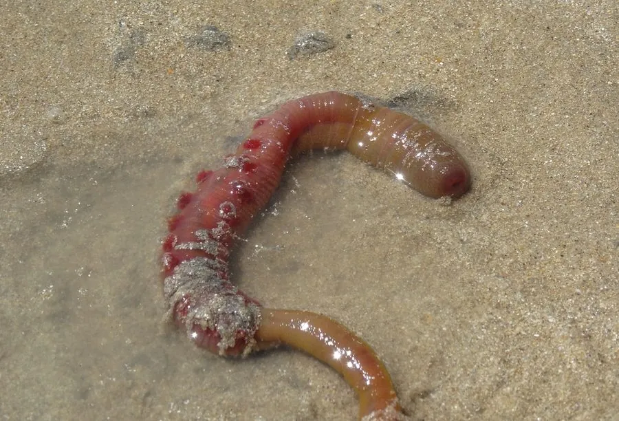

其他无脊椎动物 · 动物界
沙蠋 Arenicola marina

生活在潮间带泥滩中的大型多毛类，挖 U 形洞穴，排泄物在洞口堆成沙堆，是欧洲重要的钓饵和滩涂清道夫。
- 分类
- 门环节动物门纲多毛纲目沙蠋目科沙蠋科属沙蠋属
- 栖息环境
- 欧洲沿岸潮间带泥滩和沙滩，挖 U 形洞穴
- 地理分布
- 东北大西洋沿岸，从北极海域到地中海
- 保护级别
- 暂无评估；采捕需控制强度
物种志
沙蠋体长可达 15–20 cm，身体粗壮分节，呈香肠状，前端较细，体色红褐、绿褐或暗褐色，体节上有成对的疣足和羽状鳃，用来在泥沙中活动和呼吸。它属于多毛类环节动物，和常见的沙蚕是近亲。
它生活在欧洲沿岸的潮间带泥滩和沙滩，挖掘 U 形洞穴，头端向下取食泥沙中的有机碎屑和微生物，尾端向上排粪，在地面留下螺旋状的沙堆，是赶海时常见的地面痕迹。沙蠋是欧洲常用的钓鱼活饵，也是涉禽和鱼类的食物，在滩涂有机物分解和养分循环中起重要作用。采捕沙蠋会翻动泥滩，应控制强度和范围，以保护滩涂生态和鸟类觅食地。沙蠋也是许多涉禽的重要食物来源。
形态与习性
- 食性取食泥沙中的有机碎屑和微生物
- 体长可达 15–20 cm
- 洞穴挖 U 形洞穴，地面留下螺旋状沙堆
- 经济欧洲常用的钓鱼活饵
- 生态促进有机物分解，是涉禽和鱼类的食物
- 分布东北大西洋沿岸
趣味知识
- 沙蠋在泥滩上挖 U 形洞，洞口常留下螺旋状的沙堆。
- 它是欧洲钓鱼人常用的活饵，也被称为海蚯蚓。
- 赶海时看到泥滩上一圈圈的沙堆，多半就是沙蠋挖洞留下的。